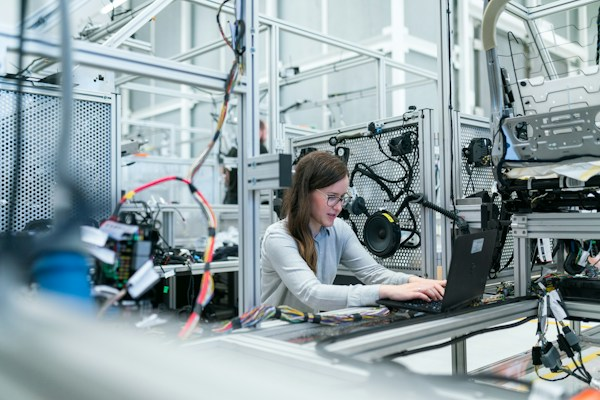

Powering the Smart Factory Revolution
Transform your manufacturing operations with Industry 4.0 technology — from smart factory automation and MES systems to predictive maintenance and quality control.
Three Pillars of Smart Manufacturing
Our manufacturing solutions cover the complete spectrum — from production automation and quality control to supply chain and predictive maintenance.
Production Automation
Automate production lines with smart MES systems, robotics integration, and real-time production monitoring.
Quality Control
Ensure product quality with AI-powered inspection, computer vision, and automated defect detection.
Predictive Maintenance
Prevent downtime with IoT sensors, machine learning, and predictive maintenance for all equipment.
Our Manufacturing Solutions in Detail
Smart Factory & MES Systems
Transform your production floor with smart MES systems, real-time monitoring, and automated workflows that optimize every stage of manufacturing.
- Manufacturing Execution System (MES)
- Real-time production monitoring
- Automated production scheduling
- Machine connectivity & control
- Production analytics dashboards
- Integration with ERP systems
AI-Powered Quality Inspection
Ensure superior product quality with computer vision and AI-powered inspection systems that detect defects in real-time and reduce waste.
- Automated visual inspection
- AI defect detection
- Real-time quality monitoring
- Statistical process control
- Root cause analysis
- Quality documentation & reporting

IoT-Driven Predictive Maintenance
Prevent unexpected downtime with IoT sensors, machine learning, and predictive analytics that identify equipment issues before they occur.
- IoT sensor deployment
- Real-time equipment monitoring
- Predictive failure analysis
- Automated maintenance scheduling
- Equipment health dashboards
- Spare parts inventory management
Why Choose Our Manufacturing Solutions
Increase Productivity
Boost production output by up to 40% through automation and real-time optimization.
Reduce Downtime
Minimize unplanned downtime with predictive maintenance and proactive alerts.
Improve Quality
Reduce defects and rework by up to 60% with AI-powered quality inspection.
Lower Costs
Cut operational costs by up to 35% through energy and resource optimization.
Faster Time-to-Market
Accelerate product development and launch with agile manufacturing workflows.
Data-Driven Decisions
Make informed decisions with real-time production intelligence and analytics.
Frequently Asked Questions
Key questions about smart factory systems, AI quality control and predictive maintenance.
What is a Manufacturing Execution System (MES)?
An MES monitors and controls production on the shop floor in real time. It covers production scheduling, machine connectivity, analytics dashboards and integration with your ERP.
How does AI-powered quality inspection work?
Cameras and AI models perform automated visual inspection and detect defects as products move through the line. Real-time quality monitoring, statistical process control and (RCA)root cause analysis help you fix problems at the source.
What is predictive maintenance and how does IoT enable it?
IoT sensors stream equipment data, and analytics predict failures before they happen. That lets you schedule maintenance in advance, track equipment health and manage spare parts, rather than reacting to breakdowns.
Can it integrate with our existing ERP and machines?
Yes. The smart factory solutions include integration with ERP systems and machine connectivity and control, so production data connects to the rest of your business.
Where should we start with Industry 4.0?
Many manufacturers begin with one clear pain point, such as downtime or quality losses, and expand from there. Connect with us and we will help you identify the best starting point.
Ready to Build Your Smart Factory?
Let's discuss how our manufacturing technology solutions can transform your production operations.